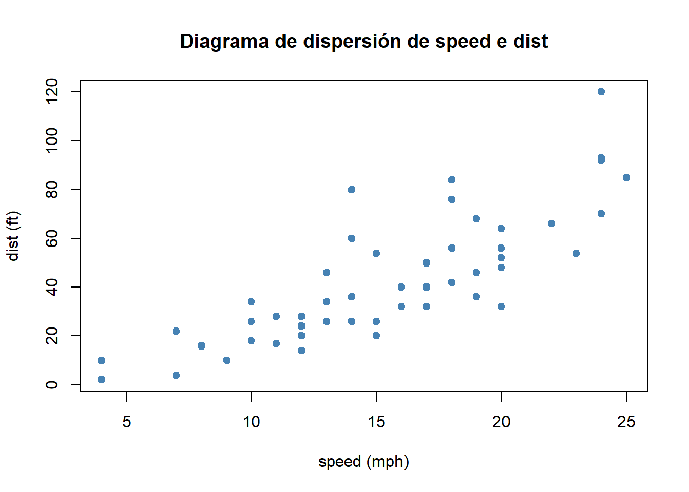
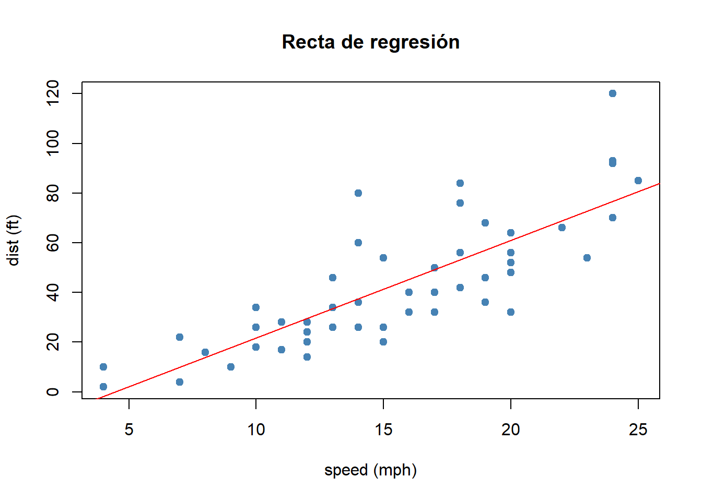

data(cars)
x <- cars$speed
y <- cars$dist
plot(x, y, main = "Diagrama de dispersión de speed e dist", xlab = "speed (mph)",
ylab = "dist (ft)", pch = 19, col = "steelblue")
Nesta práctica aplicaremos os conceptos de regresión lineal estudados na teoría utilizando o entorno de programación R. O obxectivo é aprender a axustar modelos lineais, interpretar os seus coeficientes e realizar contrastes de significación sobre eles a partir de mostras de datos.
No modelo de regresión lineal simple considérase que a variable resposta \(Y\) depende dunha única variable explicativa \(X\), e supóñese que a relación entre ambas pode aproximarse mediante unha recta. O modelo escríbese como
\[ Y = \beta_0 + \beta_1 X + \varepsilon, \]
onde \(\beta_0\) é o intercepto da recta, \(\beta_1\) é a pendente que describe como cambia \(Y\) cando cambia \(X\), e \(\varepsilon\) representa o termo de erro, que recolle a variabilidade que o modelo non pode explicar.
Para ilustrar a regresión lineal utilizaremos o conxunto de datos de R cars, que recolle información sobre a velocidade dos coches e a distancia de freado. En particular, consideraremos como variable dependente (Y) a distancia de freado (dist) e como variable explicativa ou independente (X) a velocidade (speed).
Diagrama de dispersión
Antes de axustar o modelo, representamos graficamente a relación entre as variables:
data(cars)
x <- cars$speed
y <- cars$dist
plot(x, y, main = "Diagrama de dispersión de speed e dist", xlab = "speed (mph)",
ylab = "dist (ft)", pch = 19, col = "steelblue")
Cálculo de medidas resumo, covarianza e correlación
Antes de axustar o modelo de regresión, é útil analizar a relación entre as variables mediante medidas resumo e asociación lineal.
summary(x)
## Min. 1st Qu. Median Mean 3rd Qu. Max.
## 4.0 12.0 15.0 15.4 19.0 25.0
summary(y)
## Min. 1st Qu. Median Mean 3rd Qu. Max.
## 2.00 26.00 36.00 42.98 56.00 120.00
cov(x, y)
## [1] 109.9469
cor(x, y)
## [1] 0.8068949Na práctica, os parámetros os parámetros \(\beta_0\) e \(\beta_1\) do modelo non son coñecidos e deben estimarse a partir dunha mostra, formada por pares de observacións da forma \((x_1,y_1),\ldots,(x_n,y_n).\). As estimacións resultantes adoitan denotarse por \(\hat{\beta}_0\) e \(\hat{\beta}_1\), e a recta estimada escríbese como
\[ \hat{Y} = \hat{\beta}_0 + \hat{\beta}_1 X. \]
Esta recta coñécese como recta de regresión, e permítenos estimar o valor medio da variable resposta para distintos valores da variable explicativa.
Podemos entón calcular os estimadores dos parámetros do modelo de regresión lineal de forma explícita a partir das expresións teóricas. No noso exemplo, estes valores poden calcularse directamente en R:
b1hat <- cov(x, y)/var(x)
b0hat <- mean(y) - b1hat * mean(x)
b1hat
## [1] 3.932409
b0hat
## [1] -17.57909Na práctica o axuste do modelo realízase de forma automática mediante a función lm(). A súa sintaxe básica é:
lm(formula, data = ...)onde:
formula indica a relación entre variables no formato Y ~ X,data é o conxunto de datos no que se atopan as variables.Se non se usa data, hai que referenciar explicitamente as variables no entorno de traballo. No noso caso, podemos axustar o modelo de regresión lineal simple do seguinte xeito:
modelo <- lm(dist ~ speed, data = cars)Ou de forma equivalente como:
modelo <- lm(cars$dist ~ cars$speed)A función lm() devolve un obxecto de clase lm, que contén toda a información do axuste:
class(modelo)
## [1] "lm"
names(modelo)
## [1] "coefficients" "residuals" "effects" "rank"
## [5] "fitted.values" "assign" "qr" "df.residual"
## [9] "xlevels" "call" "terms" "model"Os coeficientes estimados obtéñense con:
coefficients(modelo)
## (Intercept) cars$speed
## -17.579095 3.932409Os valores axustados polo modelo \(\hat{y}_i\) son:
fitted.values(modelo)e os residuos do modelo \(y_i - \hat{y}_i\)
residuals(modelo) # equivalente a cars$dist-fitted(modelo)A función summary() devolve un resumo estatístico completo do modelo de regresión.
summary(modelo)
##
## Call:
## lm(formula = cars$dist ~ cars$speed)
##
## Residuals:
## Min 1Q Median 3Q Max
## -29.069 -9.525 -2.272 9.215 43.201
##
## Coefficients:
## Estimate Std. Error t value Pr(>|t|)
## (Intercept) -17.5791 6.7584 -2.601 0.0123 *
## cars$speed 3.9324 0.4155 9.464 1.49e-12 ***
## ---
## Signif. codes: 0 '***' 0.001 '**' 0.01 '*' 0.05 '.' 0.1 ' ' 1
##
## Residual standard error: 15.38 on 48 degrees of freedom
## Multiple R-squared: 0.6511, Adjusted R-squared: 0.6438
## F-statistic: 89.57 on 1 and 48 DF, p-value: 1.49e-12En primeiro lugar, mostra a fórmula empregada e un resumo dos erros do modelo. Tamén aparecen columnas:
Estimate: valor estimado do coeficienteStd. Error: erro estándar da estimaciónt value: estatístico \(t\)Pr(>|t|): p-valorEn regresión lineal, os contrastes úsanse para comprobar se os coeficientes do modelo son estatisticamente significativos. Para cada coeficiente \(\beta_i\), realízase o seguinte contraste:
\[ H_0: \beta_i=0 \qquad \text{fronte a} \qquad H_1: \beta_i\neq 0. \]
Por exemplo, no caso do contraste sobre \(\beta_1\), a hipótese nula significaría que a variable \(X\) non ten efecto sobre \(Y\). A decisión baséase no p-valor, da mesma forma que vimos no tema pasado.
No modelo de regresión lineal simple, o RSE (Residual standard error) calcúlase como:
\[ RSE=\sqrt{\frac{\sum_{i=1}^{n} (y_i - \hat{y}_i)^2}{n-2}}. \]
Trátase dunha estimación da desviación típica do erro. O resumo tamén devolve o coeficiente de determinación da recta \(R^2\), que no caso do modelo de regresión lineal simple coincide con \(r_{xy}^2\)
R2 <- cor(x, y)^2
R2
## [1] 0.6510794Podemos rerpresentar a recta de regresión
plot(x, y, main = "Recta de regresión", xlab = "speed (mph)", ylab = "dist (ft)",
pch = 19, col = "steelblue")
abline(modelo, col = "red")
Unha vez axustado o modelo de regresión lineal, pódense facer predicións para novos valores \(x\) da variable explicativa \(X\). A predición realízase substituíndo o valor de \(x\) na ecuación da recta. Estas predicións representan o valor esperado de \(Y\) para un determinado valor de \(X\).
Como exemplo, facemos a predición para un coche que viaxa a 17 mph:
modelo <- lm(dist ~ speed, data = cars)
novo_dato <- data.frame(speed = 17)
predict(modelo, newdata = novo_dato)
## 1
## 49.27185